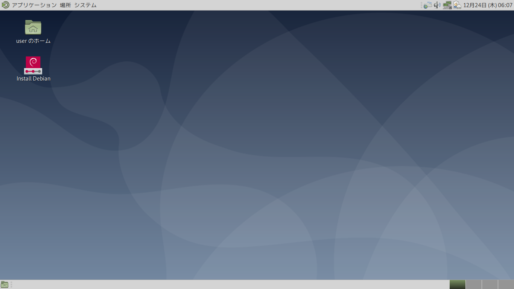

HOME
/
Distributions
/
Debian
/
Live
/ buster
Last updated: 2020/12/27 19:51 JST
Debian Live 10 (buster) に関するページ
目 次
Debian Live 10 (buster) の概要
iso イメージのダウンロードについて
Debian Live はどうやって作るのですか？
どうすれば日本語入力ができるのですか？
Debian Live 10 のインストール手順について
Debian Live 10 (buster) の概要
Debian 10 の公式 Live CD には複数のデスクトップ環境が用意されています。Cinnamon や GNOME、KDE、LXDE、MATE、Xfce の中からユーザーが気に入ったものを選んで使うことが出来るようになっています。右側に掲載した画像は起動直後の MATE デスクトップ の初期画面です。
iso イメージのダウンロードについて
ミラーサイトの /Linux/debian/debian-cd/10.7.0-live/amd64/iso-hybrid/ 以下に各種のiso イメージがあります。下記は 202012.26 現在で入手可能な iso イメージです。
debian-live-10.7.0-amd64-cinnamon.iso 2020-12-05 21:05 2.4G
debian-live-10.7.0-amd64-gnome.iso 2020-12-05 21:04 2.5G
debian-live-10.7.0-amd64-kde.iso 2020-12-05 21:06 2.6G
debian-live-10.7.0-amd64-lxde.iso 2020-12-05 21:02 2.3G
debian-live-10.7.0-amd64-lxqt.iso 2020-12-05 21:03 2.4G
debian-live-10.7.0-amd64-mate.iso 2020-12-05 21:02 2.4G
debian-live-10.7.0-amd64-xfce.iso 2020-12-05 21:00 2.3G
debian-live-10.7.0-amd64-standard.iso 2020-12-05 20:38 945M
i386 アーキテクチャ用は /Linux/debian/debian-cd/10.7.0-live/i386/iso-hybrid/ にあります。
プロプライエタリなファームウェア(Non-free Firmware)を同梱する iso イメージも用意されています。
Debian Live はどうやって作るのですか？
DVD / USBメモリに書き込み、それで起動可能なメディアを作成することが出来るようになりました。ハイブリッドISO の技術を利用して提供されています。Windows パソコンで作成する場合は、Rufus ( https://rufus.ie/ ) というオープンソースのソフトウェアを使うのが便利です。
Linux 環境では、ハイブリッドISO の仕様であるため、USBメモリに書き込む場合、単に CPコマンドを使うことができます。
公式サイトに注意書きがあります：「 <デバイス> は USB flash ドライブを示すデバイス。例えば /dev/sda, /dev/sdb。 デバイス名が確実に合っているかどうか注意してください。 間違えた場合、このコマンドは簡単にハードディスクを上書きしてしまうからです! 」
デバイス名を確認するには「システムモニター」というアプリが利用できます。dmesg コマンドでも確認が可能です。管理者権限で dmesg コマンドを実行すると膨大なシステム情報が表示されますが、その最後の方の行に下記のように USB デバイスのマウント情報が出力されます。
[ 5346.015133] sd 2:0:0:0: [sdb] Attached SCSI removable disk
この例では [sdb] の部分がデバイス名を表示しています。
CP コマンドを使う場合のひな型を示しておきます：
# cp <ファイル> <デバイス>
実行例：
#
cp debian-live-10.3.0-amd64-cinnamon+nonfree.iso /dev/sdb
https://www.debian.org/CD/faq/index.ja.html#write-usb
>CD/DVD/BD イメージを USB flash ドライブに書き込む
"
The image must be written to the whole-disk device and not a partition,
e.g. /dev/sdb and not /dev/sdb1.
Do not use tools like unetbootin which alter the image."
https://www.debian.org/releases/jessie/i386/ch04s03.html.ja
起動時のオプションで、ロケールで日本語を選択すれば外観（インターフェー ス）は完全に日本語化されます。
日本語入力を開始するには、「入力メソッド」の設定を行う必要があります。メ ニュー > 設定 > 入力メソッド（下側のアイコン）で行なうか、コマンドラインから次のコマンドを実行して設定します： $ im-config
日本語入力方式は、ibus fcitx uim xim のうちから選択可能ですが、uim が使いやすいと思います（Debian標準の
日本語入力方式
）。
どうすれば日本語入力ができるのですか？
Debian Live が起動した直後は、直接入力（英数入力）が有効になっています。その時点では未だ日本語の入力はできません。パネルの [システム] > [設定] > [その他] > [入力メソッド] を起動するか、あるいは次のコマンドを実行します。
$ im-config
日本語入力の設定画面が立ち上がるので、ここで uim を選択します。これで設定完了です。
Debian Live 10 のインストール手順について
Debian Live 10 のisoイメージを使えば、インターネット接続環境不要でそのままインストールが可能です。簡易な Debian インストーラーとして利用可です。インストール手順についてスクリーンショットを載せたページを作成したのでご覧ください。以前の Live iso と比較すると良く仕上がっています。
Debian Live 10 インストールのページ
で作業の手順を紹介しています。スクリーンショットを追って作業を進めてください。グラフィカルでより対話的に行えるように改善されました。
HOME
/
Distributions
/
Debian
/
Live
/ buster